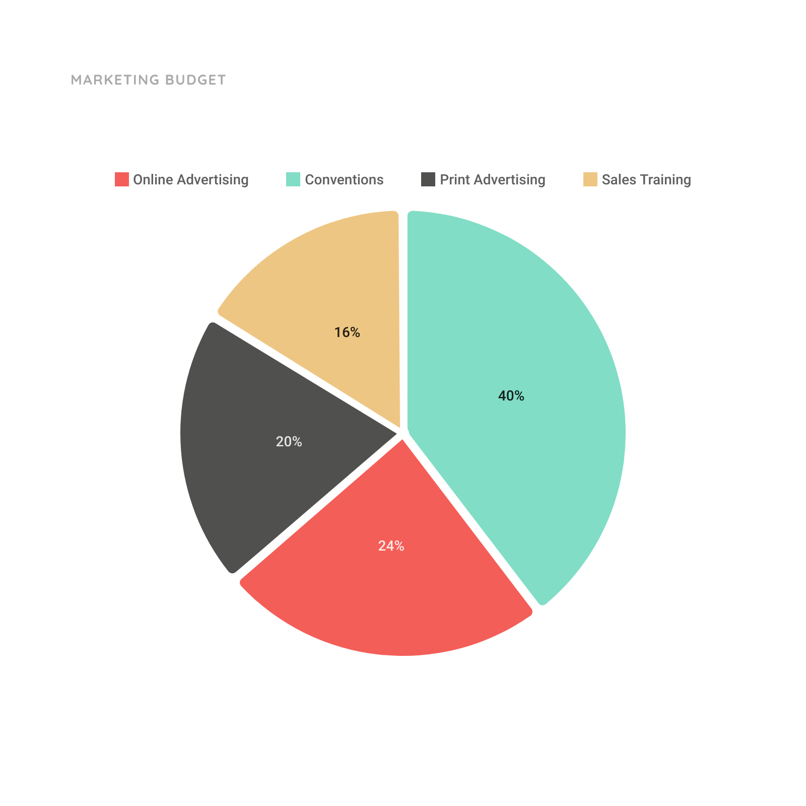

<!--Laras code-->

{% extends "base.html" %}

{% block content %}
<script src='https://cdnjs.cloudflare.com/ajax/libs/Chart.js/1.0.2/Chart.min.js'></script>
<link rel="stylesheet" href="../static/report.css">

    <br>
    <h1 align="center">Weekly Spending Graph</h1>
    <br>

<!--    <canvas id="chart" width="600" height="400">    </canvas>-->

<!--        <script src="javascript.js">
            document.write(pieData) Pie data from javascript file would show info
        </script>-->
        
<!--Image to show pie chart in mean time-->


{% endblock %}